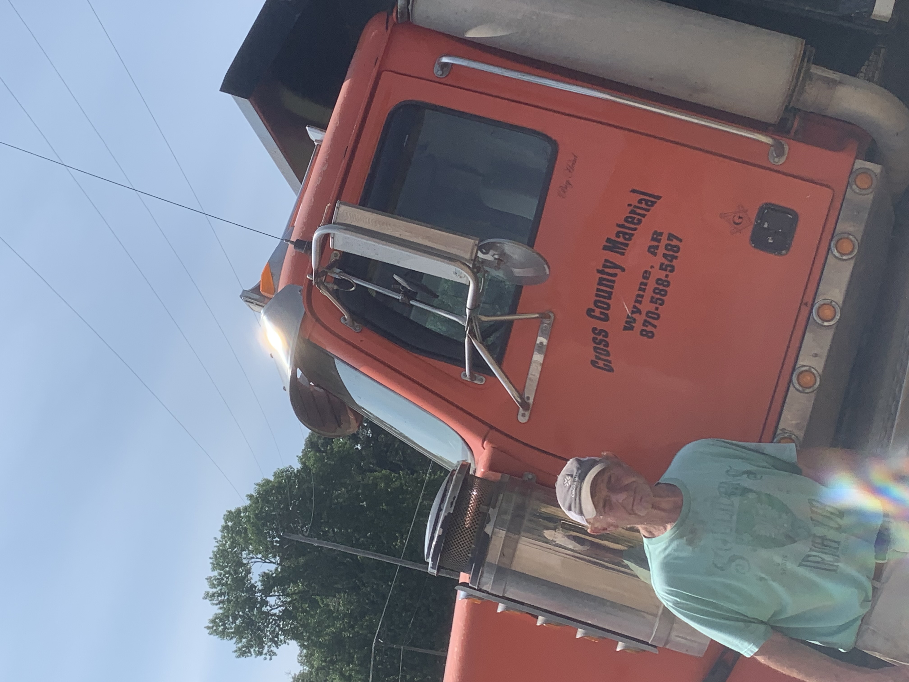

Cross County Material has proudly served the Delta region since 1982, when it was founded by Harold Poindexter with a simple mission: to provide dependable, high-quality gravel, sand, and rock materials to support local construction and development. Over the decades, that mission has remained unchanged — though the company has grown and evolved, it remains deeply rooted in the values of hard work, family, and community.
Today, Cross County Material is led by Harold’s son, Brad Poindexter, who continues the family legacy with the same dedication to quality and service. From roads and commercial buildings to driveways, landscaping, and even swimming pools, we’re proud to supply the materials that help build the places where people live, work, and grow. Whether you're a contractor, a homeowner, or a business owner, you can count on us to deliver with honesty, reliability, and care.
Get in TouchCross County Material has proudly served Arkansas since 1982.
“We don’t just deliver material — we deliver quality and trust, one load at a time.”© 2025 Cross County Material | Located in Cross County, Arkansas